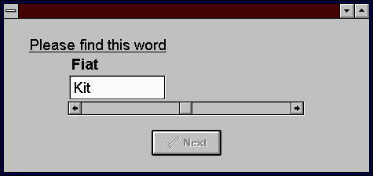
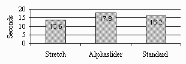

Stretch Button Scrollbar
Daniel J. Smith*, Robert A. Henning **
- *Dept. of Psychology, University of Connecticut
- Storrs, CT 06269
- (203) 486-5557, dsmith@psych.psy.uconn.edu
- **Dept. of Psychology, University of Connecticut
- Storrs, CT 06269
- (203) 486-5918, henning@uconnvm.uconn.edu
ABSTRACT
Previous research has examined the use of a scrollbar for item
selection in very large lists. This report presents an alternative
design based on an understanding of the action capabilities and
perceptual feedback. Experimental results show substantial performance
benefits when using the Stretch Button scrollbar compaired to
other designs.
Keywords:
scrollbar, widget, selection technology, action/perception
based control, dynamic system.
INTRODUCTION
Computer systems can control and present large amounts of information
in complex and dynamic ways, often requiring operators to manipulate
control variables containing thousands of values. This report
describes a graphical user interface (GUI) design and evaluation
project intended to meet several goals:
- Allow a user to rapidly search a very large list of items.
- Reduce required screen space to a minimum.
- Use only with pointing device (mouse, pen, trackball).
Previous research attempted to achieve these goals by modifying
the design of the standard scrollbar GUI element. However, empirical
data analysis did not find improved performance [1]. This project
attempts to achieve the above goals by taking an action/perception
based control perspective on the task of item search.
Item Search Task Analysis
Item search involves browsing and/or searching a list of items
for a target, and is theorized to be a dynamic, feedback controlled
process incorporating the action capabilities and perceptual feedback
properties of the system. According to Flach [2], the key to control
over dynamic, complex activity is the integration and coordination
of action and perception. In this case, the fundamental element
of item search is control of position, enabled by movement within
the list. While movement can be viewed as a continuum of item
scanning speed ranging from gross to fine movement, it is valuable
to explicitly describe the endpoints of the continuum.
Gross Movement. Very large jumps through the list.
Range of Moderate Movement. Control over position, achieved
through a closed-loop feedback process.
Fine Movement. Movement by single items.
Action/Perception Based Control
The basic idea of action/perception based control has been extended
to input devices, calling for a deeper analysis than simple surface
structure (e.g., analysis based on Fitts' law). Optimal control
requires an analysis of the perceptual structure of the task,
the control (action) properties of the input device, and their
interrelationship [3]. An action/perception based control perspective
on design suggests a control system designed for searching a very
large list of items must integrate:
- The action capabilities which enable control of position using
the continuum of movement.
- Perceptual feedback which facilitates action regulation.
DESIGN
The design goals severely limit the possibilities for effective
and flexible HCI design, however, previous research found the
layout shown in Figure 3 to be an acceptable alternative to menus
or keyboard input [1]. Design opportunities, in this case, center
around modification of the standard scrollbar GUI element. To
enable rapid item search, access to the actions which enable control
over position must be provided. Thus, the following actions are
to be supported: 1) Gross movement. 2) Range of moderate movement.
3) Fine movement.
To properly regulate these actions, perceptual information must
not only indicate one's position within the list, but provide
information that enables one to regulate one's action. The capability
for closed loop action/perception based control will enable one
to effectively control and coordinate action to find the target.
Stretch Button Scrollbar
This scrollbar consists of a bar which containing a thumb with
three components (Figure 1). The various surfaces afford several
opportunities for action to the user:
Figure 1: Stretch Button Scrollbar
Gross movement: Thumb's center button can be used to drag
the thumb along the length of the bar, changing item list position
relative to the thumb's position within the bar.
Range of moderate movement: Dragging upon an arrow button
away from the thumb will change position within the list by one
item per mouse movement (Figure 2).
Figure 2: Stretch Button Thumb
Fine movement: Clicking on either arrow button (without
dragging) changes list position by a single item.
Support for Item Search: The Stretch Button scrollbar design
gives the user the opportunity to perform the full range of actions
required for control of position within the item list. This allows
one to directly access activities appropriate for progressing
towards the target position quickly and accurately. In addition,
the design includes commensurate perceptual feedback for regulating
action.
EXPERIMENT
To evaluate the Stretch Button scrollbar design, an experiment
was conducted to compare search performance of the Stretch Button
scrollbar, the Standard scrollbar design, and the Alphaslider
design [1]. The experiment involved thirty three participants
searching for a target word within an alphabetical list of 10,000
words.
Procedure
The within-subjects experimental design attempted to minimize
order and learning effects by counter-balancing the order of design
presentation, and giving the participants the opportunity to practice
with each scrollbar design. The participants were given an overview
of the experimental task, and instructions for using each scrollbar
design. A computer program presented the experiment to each participant
and recorded the performance data (Figure 3).

Figure 3: Example Computer Program
Screen
For each experimental trial, the time to find the target word
was recorded by the computer program. Participants took between
40 and 60 minuets to find 25 words with each design, after which
they completed a twelve question subjective preference questionnaire.
Hypotheses
The Stretch Button scrollbar will enable participants to find
the target word in less time than the other scrollbar designs.
RESULTS
Participants were able to find the target word, on average, in
less time using the Stretch Button design than the other two scrollbar
designs (Figure 4). ANOVA analysis found the differences between
the three scrollbar designs to be statistically significant (F(2,69)
= 8.84, p < 0.001) and planned comparison analysis found the
Stretch Button scrollbar design to be significantly faster than
the other two designs (p < 0.05).

Figure 4: Average Time to Find Target
Word
DISCUSSION
In terms of the stated design goals the Stretch Button scrollbar
is a success and an improvement on the standard scrollbar design.
Analysis of the item search task using an action/perception perspective
provided a basis for understanding the fundamental elements of
the task Elaboration of the movement continuum uncovered three
basic activities involved in item search: 1) Gross movement. 2)
Range of moderate movement. 3) Fine movement.
By designing for direct access to these activities, the Stretch
Button scrollbar affords a broader range of movement control than
other designs. In addition, the action/perception based control
perspective focused attention on the interrelationship between
the action capabilities of the control and the regulating perceptual
information provided by the control. The result is a design where
action and perception are coordinated, improving performance over
previous designs. This allows designers to provide access to many
control variables simultaneously, enabling complex and dynamic
system control.
Further Research
It may be possible to apply the Stretch Button scrollbar to other
areas where the Standard scrollbar design is used. Only after
careful consideration of the action/perception based control characteristics
of the task can it be determined if this design is applicable.
In addition, other common GUI control widgets may benefit from
an action/perception based analysis. By concentrating on the inter-relationship
between action capabilities and perceptual information, users
may be able to control complex computer systems.
REFERENCES
- Ahlberg, C., & Shneiderman, B. The Alphaslider: A compact
and rapid selector. Proceedings of CHI'94 Human Factors in Computing
Systems (Boston, April 1994), 365-371.
- Flach, M. J. (1995). Beyond Error: The language of coordination
and stability. In J. Rasmussen & B. Brehmer (eds.) The Evolution
and Breakdown of Adaptive Systems. pp. 231. Wiley & Sons,
New York.
- Jacob, R. J. K., Sibert, L. E., McFarlane, D. C., & Mullen,
M. P. Jr. (1994). Integrality and separability of input devices.
ACM Transactions on Computer-Human Interaction, 1(1), 3-26.